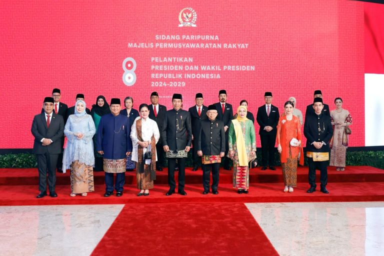
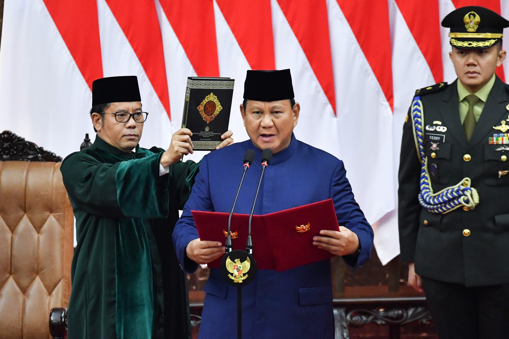
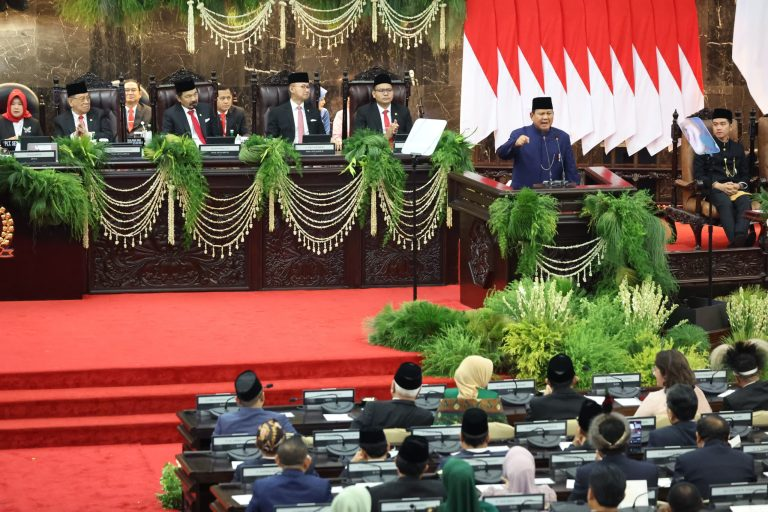

Pelantikan Prabowo Subianto dan Gibran Rakabuming Raka sebagai Presiden dan Wakil Presiden RI 2024-2029
Senin,21 Oktober 2024
Jakarta –Majelis Permusyawaratan Rakyat (MPR) RI menggelar Sidang Paripurna dengan agenda tunggal Pelantikan Presiden dan Wakil Presiden RI masa jabatan 2024-2029 Prabowo Subianto dan Gibran Rakabuming Raka di Gedung MPR/DPR RI, Jakarta. Acara ini berlangsung khidmat pada Minggu (20/10), dimulai sekitar pukul 10.00 WIB.
Rangkaian acara pelantikan diawali dengan menyanyikan Lagu Kebangsaan Indonesia Raya, diikuti dengan hening cipta sebagai bentuk penghormatan kepada para pahlawan bangsa. Setelah itu, Ketua MPR RI Ahmad Muzani secara resmi membuka Sidang Paripurna untuk Pelantikan Presiden dan Wakil Presiden RI Periode 2024-2029.
Prosesi dilanjutkan dengan pengucapan Sumpah Presiden diikuti oleh pengucapan Sumpah Wakil Presiden. Keduanya berjanji untuk menjalankan tugas dan tanggung jawab dengan sebaik-baiknya demi kepentingan bangsa dan negara.
“Demi Allah, saya bersumpah akan memenuhi kewajiban Presiden Republik Indonesia dengan sebaik-baiknya dan seadil- adilnya. Memegang teguh Undang-Undang Dasar dan menjalankan segala Undang-Undang dan Peraturannya dengan selurus- lurusnya, serta berbakti kepada nusa dan bangsa,” ucap Presiden Prabowo.
“Demi Allah, saya bersumpah akan memenuhi kewajiban Wakil Presiden Republik Indonesia dengan sebaik-baiknya dan seadil-adilnya. Memegang teguh Undang-Undang Dasar dan menjalankan segala Undang-Undang dan Peraturannya dengan selurus-lurusnya, serta berbakti kepada nusa dan bangsa,” ucap Wapres Gibran.
Acara berikutnya adalah penandatanganan Berita Acara Pelantikan, serta penyerahan dokumen tersebut, yang menandai pengesahan pelantikan. Selanjutnya, dilakukan prosesi pertukaran tempat duduk antara Presiden dan Wakil Presiden RI periode 2024-2029 dengan Presiden RI Joko Widodo dan Wakil Presiden RI Ma’ruf Amin periode 2019-2024.
Agenda berikutnya adalah penyampaian pidato pertama Presiden RI. “Saya Prabowo Subianto dan saudara Gibran Rakabuming Raka telah mengucapkan sumpah untuk mempertahankan Undang-Undang Dasar kita, untuk menjalankan semua Undang-Undang dan Peraturan yang berlaku, untuk berbakti kepada negara dan bangsa. Sumpah tersebut akan kami jalankan dengan sebaik-baiknya,” kata Presiden Prabowo.
Pada pidatonya, Presiden Prabowo juga menitikberatkan pemerintahannya ke depan untuk fokus pada swasembada pangan dan energi. Diyakini bahwa paling lambat 4 sampai dengan 5 tahun ke depan Indonesia akan swasembada pangan. “Bahkan kita siap menjadi lumbung pangan dunia,” kata Presiden Prabowo.
“Kami siap melanjutkan estafet kepemimpinan. Kita siap bekerja keras menuju Indonesia Emas menjadi bangsa yang kuat, merdeka, berdaulat, adil dan makmur,” tambah Presiden Prabowo.
Selanjutnya Presiden dan Wapres RI meninggalkan gedung MPR menuju Istana Negara, yang menandai awal baru bagi kepemimpinan Indonesia menuju masa depan yang lebih baik.
Acara Pelantikan Presiden dan Wakil Presiden ini turut dihadiri Presiden ke-6 RI Susilo Bambang Yudhoyono, Wakil Presiden ke-6 RI Try Sutrisno, Wakil Presiden ke-10 dan ke-12 RI Jusuf Kalla, Wakil Presiden ke-11 RI Budiono, Ibu Sinta Nuriyah Abdurrahman Wahid, Ibu Soraya Hamzah Haz, para Wakil Ketua MPR, Ketua dan para Wakil Ketua DPR, Ketua dan para Wakil Ketua DPD, Ketua Lembaga-Lembaga Negara, para Ketua Umum Partai Politik yang hadir, para Kepala Negara, Kepala Pemerintahan, serta utusan khusus dari negara-negara sahabat, para Duta Besar dan kepala perwakilan negara-negara sahabat, Jaksa Agung, Panglima TNI, Kapolri, dan para Kepala Staf Angkatan, serta menghadirkan Orchestra Symphony Praditya Wiratama Unhan RI. (Biro Humas Setjen Kemhan)